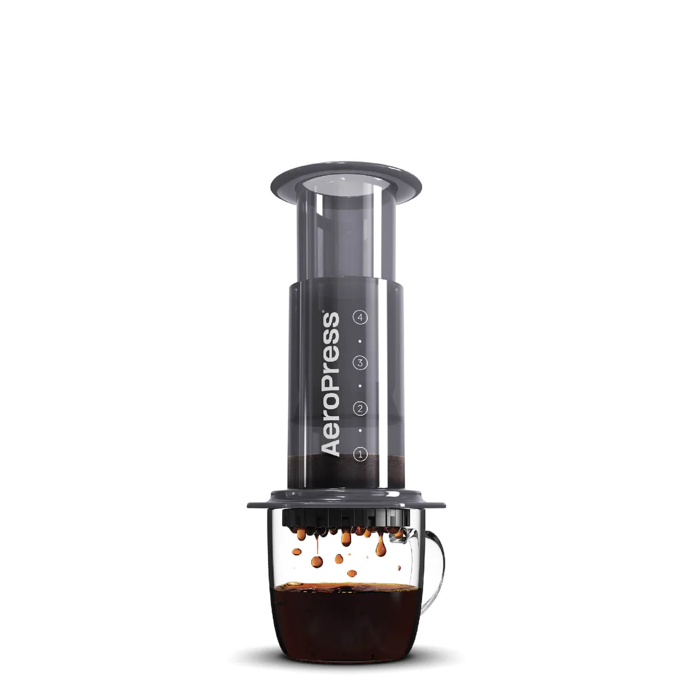

Aeropress Recipe
Description
The Aeropress is a coffee-making contraption that produces strong, flavorful coffee with minimal effort. While there is one standard method of brewing coffee provided by the manufacturer, many people have come up with their own adaptations. This is a simple recipe for an amazing cup of coffee with the aeropress, popularized by James Hoffmann. It takes about 5 minutes in total.
Ingredients
- Aeropress
- Aeropress coffee filter
- Mug
- 1 cup boiling hot water
- 2 tablespoons of ground coffee
Steps
- Boil the water.
- While the water is boiling, scoop the coffee into the aeropress coffee filter chamber.
- When water is boiled, add the water to the filter chamber to the number 4 circle.
- Press the plunger slightly into the Aeropress chamber, just enough to create a vacuum seal.
- Let the coffee brew for about 2 minutes.
- Holding the Aeropress plunger and chamber, gently swirl to break up the coffee crust. Stop swirling once the coffee frees up and wait 30 seconds.
- Slowly plunge with equal pressure. This should take about 30 seconds.
- Once fully plunged, pull the plunger back a little to help prevent drippage. Then discard the coffee grounds.
- Enjoy!